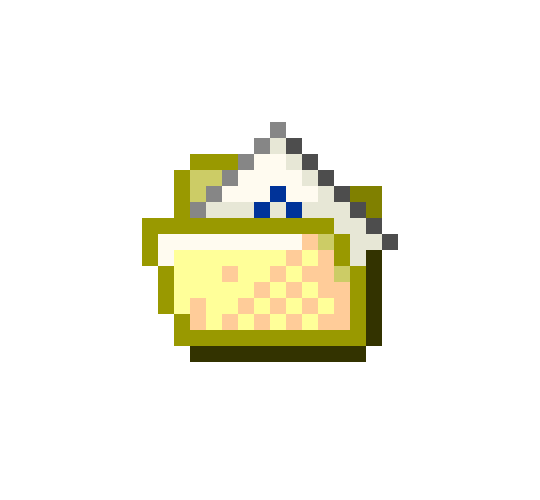
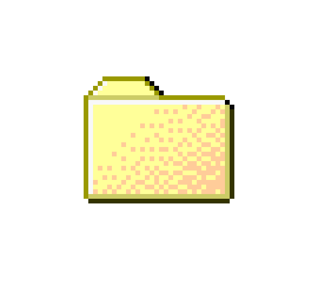
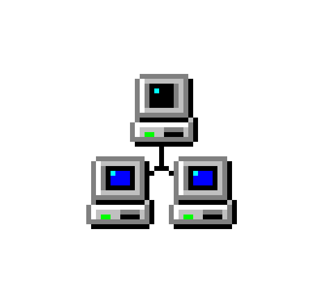
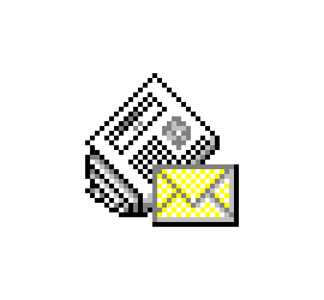
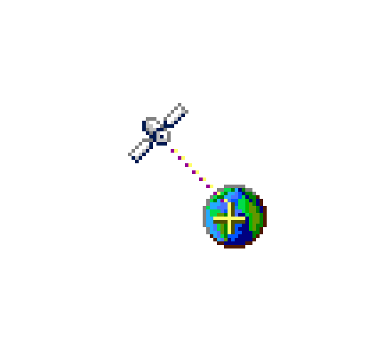
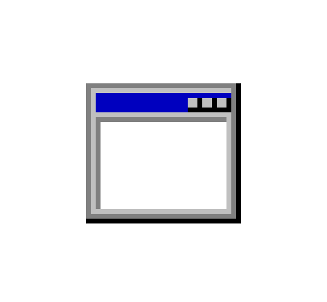

meshwork
Hi, I'm Merve
I work with systems of memory, collective gestures, and quiet technologies.
This page introduces Meshwork—a project I’ve been working on throughout 2024–2025 that explores how technologies and environments intertwine. Using thread and trace as guiding metaphors, it revisits the histories of weaving and computing, and follows the patterns they leave behind. The project turns these layered interactions into a narrative—part archaeology, part cartography. Meshwork is supported by the Artistic Production Fund of Salt and the BBVA Foundation.
Here, you will find the full archive of the process, digital resources, and experimental documentation. For more information, contact me at mervemepa@gmail.com
 TEXT
TEXT
Library
Archive
Installation
News- Index

HTML

BoardsSelect a category to see the content.